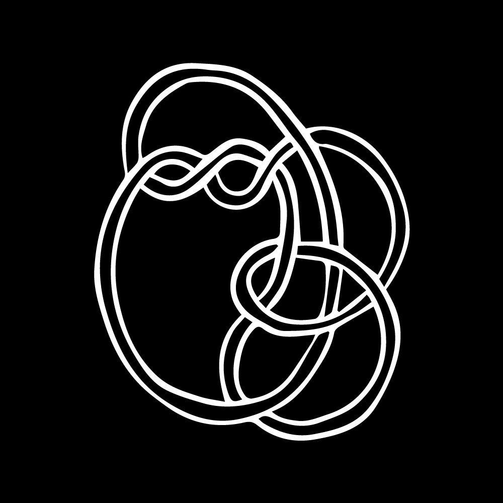

Oral History
Char Jeré and Lina Chang
- Brooklyn Public Library, 10 Grand Army Plaza, Brooklyn, NY 11238
- Char Jeré and Lina Chang in conversation regarding an Introduction to Code Societies taught by Melanie Hoff, neta bomani, emma rae norton and Taeyoon Choi.
- Library, stuck, afro, fractlism, representation
Simone Browne and Tsige Tafesse

- Brooklyn Public Library, 10 Grand Army Plaza, Brooklyn, NY 11238
- Simone Browne and Tsige Tafesse respond to Surveillance Studies taught by American Artist and Simone Browne.
- Surveillance, technology, supremacy, oral history, trust, memory, Ethiopia, family
Markov chain poetry reading from Computational Exploration of Magical and Divinatory Language by Allison Parrish
- School for Poetic Computation, 155 Bank St, New York, NY 10014
- Narrators: Allison Parrish, Adina Glickstein, Alonso Castro, Amber Officer-Narvasa, Andreas Jonathan, César Neri, Char Jeré, Char Stiles, Christina Entcheva, Cy X, Eliseo Rivera, Elizabeth Perez, emma rae norton, Holly Meadows-Smith, Ladipo Famodu, Lina Chang, Mehrnaz Rohbakhsh, Melanie Hoff, neta bomani, Shea Fitzpatrick, Sophie Kovel, Tina Nguyen
- Data set by Code Societies students, collaboration with Python code written by Allison Parrish